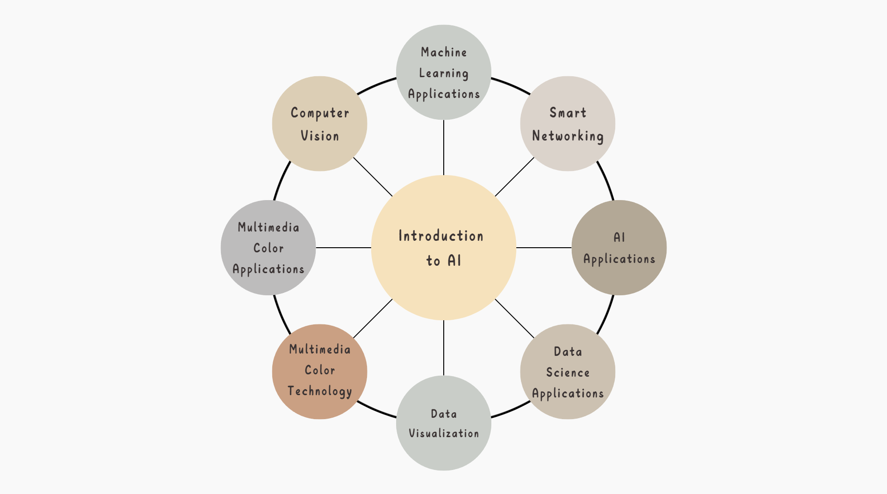

Course Introduction
The arrival of the era of artificial intelligence (AI) has led businesses to move towards autonomy and automation. The control of AI-related hardware and software has laid the foundation for the design and development of autonomous products and intelligent systems.
Shih Hsin University’s Department of Information Management offers AI-related courses that are based on programming and data analysis skills, supplemented with specialized hardware and software courses related to AI. Through a combination of theoretical foundation courses and practical application courses, students are trained to enter the AI field, including the development and design of products and systems in areas such as machine vision, natural language processing, intelligent robotics, and generative creation. Additionally, by working on their graduation projects, students integrate theory with practice to develop and design autonomous and automated products and systems.
Graduates are employed across various industries, including manufacturing, information technology, and services. The roles they take on are primarily focused on the development and design of autonomous products and intelligent systems, project management, and system maintenance. They enjoy attractive salaries and a strong sense of job satisfaction. By joining Shih Hsin University’s Department of Information Management, students can unlock unlimited possibilities in the practical application of AI.
Course Structure

Navigator
- Lin Jin-ling:
- Luo Mei-jun:
- Liu Chia-chieh:
- Shih Chao-cheng:
Machine Learning, Intelligent Robotics, Information Retrieval & Mining, Location Planning
Fingerprint Image Processing, Machine Learning, Deep Learning, Natural Language
Machine Learning, Algorithms, Machine Learning, Graph Theory, String Theory
Big Data Mining, Artificial Intelligence, IoT, Data Structures & Algorithms, Parallel Algorithms